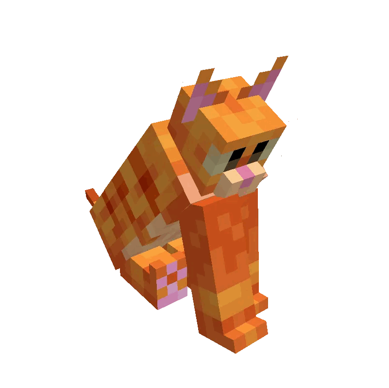

Clique aqui para acessar à 2ª pag
O conceito do grupo TWICE evoluiu ao longo do tempo, mas historicamente é associado a um conceito alegre, colorido e fofo, com músicas cativantes, coreografias marcantes e referências à cultura pop e tendências online, inspirando-se na ideia de tocar o coração das pessoas "duas vezes". No entanto, mais recentemente, o grupo tem adotado um visual mais maduro e ousado, com uma transformação que reflete o amadurecimento das integrantes como artistas e pessoas.